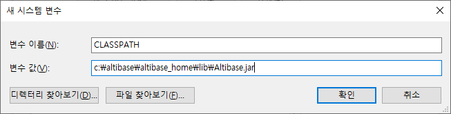

Overview
This Developer's guide describes how to develop in integration with Altibase in the JAVA environment and matters to consider during the development. Altibase version 6.5.1, JRE or JDK is version 1.5, and development IDE is based on Eclipse.
In addition to this document, please refer to the following documents during the development.
- Altibase Development Guide
- Altibase SQL Tuning Guide
Settings before the development
Altibase JDBC Driver is required to integrate with Altibase in the JAVA environment. This section describes the Altibase JDBC driver.
Types of Altibase JDBC Drivers
Altibase provides two types of JDBC drivers, and the location of the file is $ALTIBASE_HOME/lib directory.
- Altibase.jar : A general JDBC Driver file used when integrating Altibase DB or multiple Altibases of the smae version
- Altibase6_5.jar : JDBC Driver file used when integrating Altibase version 5 or earlier version
How to integrate with Altibase with different versions using Altibase.jar and Altibase6_5.jar is described below.
How to check Altibase JDBC Driver version
To verify the compatibility of the Altibase Server and Altibase JDBC Driver, the user must check the Altibase JDBC Driver version.
It is compatible if the cm protocol versions of Altibase DB Server and CMP of Altibase JDBC Driver are the same.
The command to check the Altibase JDBC Driver version is as follows.
$ java –jar Altibase.jar JDBC Driver Info : Altibase Ver = 6.5.1.5.10 for JavaVM v1.4, CMP:7.1.3, Sep 6 2018 09:17:52
The command to check the Altibase DB Server version is as follows.
$ altibase -v version 6.5.1.5.10 X86_64_LINUX_redhat_Enterprise_release6.0-64bit-6.5.1.5.10-release-GCC4.6.3 (x86_64-unknown-linux-gnu) Sep 6 2018 09:26:56, binary db version 6.3.1, meta version 8.1.1, cm protocol version 7.1.3, replication protocol version 7.4.2
Generally, it is recommended to use the latest Altibase JDBC Driver file of the same or later version than the Altibase DB Server version.
Setting up JDBC Driver
This section describes how to set the Altibase JDBC Driver.
How to set it up in JRE
To use the Altibase JDBC Driver in the Java Application, the Altibase JDBC Driver must be recognized in JRE.
Use one of the three methods presented below.
Method 1. CLASSPATH environment variable
Add the Altibase JDBC Driver (Altibase.jar) file location to the CLASSPATH environment variable.
1) Windows
- Create a new CLASSPATH: Register the CLASSPATH variable by click the [New] button in My Computer-Properties-Advanced-Environment variables
- Use existing CLASSPATH: Add Altibase JDBC Driver location to the end of the specified variable

2) Unix
- Add the CLASSPATH to the environment configuration file (ex.profile).
export ALTIBASE_HOME=$HOME/altibase_home export CLASSPATH=.:$ALTIBASE_HOME/lib/Altibase.jar
3) Linux
- Add the CLASSPATH to the environment configuration file (ex.bash_profile).
export ALTIBASE_HOME=$HOME/altibase_home export CLASSPATH=.:$ALTIBASE_HOME/lib/Altibase.jar
Method 2. JRE(Java Runtime Environment) directory
- Place the Altibase.jar file in the following directory so that the Altibase JDBC Driver (Altibase.jar) can be automatically referenced in the JRE environment.
$JAVA_HOME/jre/lib/ext directory or $JRE_HOME/lib/ext directory
$JAVA_HOME is the JDK installation directory and $JRE_HOME is the JRE installation directory.
Method 3. –classpath option at run time
- When running the Java application with the java command, specify the Altibase JDBC Driver with the -cp or -classpath option
$ java –classpath [directory path]/Altibase.jar ClassFileName Example) $ java –classpath $ALTIBASE_HOME/lib/Altibase.jar HelloApp
How to set it up in Eclipse
This section describes how to add Altibase JDBC Drive in Eclipse is as follow.
- Click JRE System Library [J2SE-1.5] in the Project
- Click JRE System Library [J2SE-1.5] in the Properties
- Click the Installed JREs button
- Select jre among Installed JREs and click Edit button
- Click the Add External JARs button
- Select Altibase.jar in the $ALTIBASE_HOME/lib directory

How to use Driver loading & Connection URL
This section describes how to load the Altibase JDBC Driver and connect to Altibase.
Driver loading
The class name of Altibase JDBC Driver is Altibase.jdbc.driver.AltibaseDriver.
The following is an example of the code that loads the Driver by calling the Class.forName method.
Class.forName("Altibase.jdbc.driver.AltibaseDriver");
General Connection
When receiving a connection object from JDBC, the DriverManager.getConnection method is called.
At this time, the String type url should be entered as an argument. An example of writing the Altibase connection url is as follows.
jdbc:Altibase://ip_address:port_no/db_name * ip_address : ip of Altibase DB server * port_no : port_no of Altibase(Defined as PORT_NO property in $ALTIBASE_HOME/conf/altibase.properties) * db_name : name of Altibase DB의 (Defined as DB_NAME property in $ALTIBASE_HOME/conf/altibase.properties 파일의 DB_NAME)
The following is an example of receiving a connection object according to the above format.
String db_url1 = "jdbc:Altibase://192.168.1.111:20300/mydb";
Properties props1 = new Properties();
props1.put("user", "sys");
props1.put("password", "manager");
Connection altibaseConnection1 = DriverManager.getConnection(db_url1, props1);
* Server ip is 192.168.1.111, port_no is 20300, db_name is mydb
The following is how to lookup the DB_Name.
iSQL> SELECT DB_NAME FROM V$DATABASE; DB_NAME ------------------------------------------------------------------------------------------------------------------------------------ mydb 1 row selected.
Property to be set during the Connection
When connecting, the user can specify various properties including the user name and password of the db. Properties can be specified by using the java.util.Properties class, or by connecting to the String url part in the form of &property_name=value.
The properties that can be specified are as follows.
| Property name | Description | Default value |
|---|---|---|
| portNumber | PORT_NO of DB | 20300 |
| databaseName | NAME of DB | JDBC |
| user | User name of DB | SYS |
| password | password of DB | MANAGER |
| serverName | IP of DB server | localhost |
| connType | Connection type 1: TCP/IP 3: IPC | 1 |
The followings are examples of specifying the property.
Using the Property class
Properties props1 = new Properties(); props1.put("user", "sys"); props1.put("password", "manager"); Connection altibaseConnection1 = DriverManager.getConnection(db_url1, props1);Connecting to URL and specifying
String db_url1 = "jdbc:Altibase://192.168.1.111:20300/mydb? user=sys&password=manager"; Connection altibaseConnection1 = DriverManager.getConnection(db_url1);
Connection using the Altibase's ConnectionPool
Version 6.3.1 or later
If the user is using the AltibaseConnectionPoolDateSource class provided by Altibase, the user can manage the connection by using ConnectionPool.
After creating the AltibaseConnectionPoolDataSource object, use the setUrl() method to set the connection url information, or the user can implement it by calling the set XXX() method that sets each property.
AltibaseConnectionPoolDataSource class is defined in Altibase.jdbc.driver packageAltibaseConnectionPool.javaimport Altibase.jdbc.driver.*; … String db_url1 = "jdbc:Altibase://192.168.1.111:20300/mydb"; AltibaseConnectionPoolDataSource pool = new AltibaseConnectionPoolDataSource(); pool.setUrl(db_url1); pool.setUser("sys"); pool.setPassword("manager"); pool.setInitialPoolSize(10); pool.setMinPoolSize(5); pool.setMaxPoolSize(15); pool.setMaxIdleTime(10); .. Connection altibaseConnection1 = pool.getConnection(); ...Version 6.1.1
If the user uses the ABPoolDataSource class provided by Altibase, the user can manage the connection by using the ConnectionPool.
After creating the ABPoolingDataSource object, use the setUrl() method to set the connection url information, or the user can implement it by calling the set XXX() method, which sets each property.
The ABPoolingDataSource class is defined in the Altibase.jdbc.driver package.AltibaseConnectionPool.javaimport Altibase.jdbc.driver.*; … String db_url1 = "jdbc:Altibase://192.168.1.111:20300/mydb"; ABPoolingDataSource pool = new ABPoolingDataSource(); pool.setUrl(db_url1); pool.setUser("sys"); pool.setPassword("manager"); pool.setInitialPoolSize(10); pool.setMinPoolSize(5); pool.setMaxPoolSize(15); pool.setMaxIdleTime(10); .. Connection altibaseConnection1 = pool.getConnection(); ...
If necessary, the following properties can be applied to the ConnectionPool.
| Property | Description |
|---|---|
| url | Connection string information for connecting with Altibase jdbc:Altibase://IP:port_no/db_name |
| user | Database account |
| password | Database password |
| maxPoolSize | Maximum number of Connections. Default value: 10. |
| minPoolSize | Minimum number of Connections. Default value: 0. |
| initialPoolSize | Initial number of Connections. Default value: 1. |
| maxIdleTime | Waiting time of idle |
| propertyCycle | Waiting time when the ConnectionPool is full (millisec) |
Connection using the XA
Version 6.3.1 or later
To manage distributed transactions, the user can use the AltibaseXADataSource class to get a connection. This class is defined in the Altibase.jdbc.driver package.
The following is an example of implementing XA by getting XAConenction object with AltibaseXAResource object, and Connection object with XAconnection object.AltibaseXAConnection.javaimport Altibase.jdbc.driver.*; … AltibaseXADataSource axds1 = new AltibaseXADataSource(); axds1.setUrl("jdbc:Altibase://192.168.1.111:20300/mydb"); axds1.setUser("SYS"); axds1.setPassword("MANAGER"); AltibaseXADataSource axds2 = new AltibaseXADataSource(); axds2.setUrl("jdbc:Altibase://192.168.1.222:20300/mydb"); axds2.setUser("SYS"); axds2.setPassword("MANAGER"); // Get XA connections to the underlying data sources XAConnection pc1 = axds1.getXAConnection(); XAConnection pc2 = axds2.getXAConnection(); // Get the physical connections Connection conn1 = pc1.getConnection(); Connection conn2 = pc2.getConnection(); // Get the XA resources XAResource axar1 = pc1.getXAResource(); XAResource axar2 = pc2.getXAResource();Version 6.1.1
To manage distributed transactions, the user can get a connection by using ABXADataSource and class provided by Altibase.
This class is defined in the Altibase.jdbc.driver package. As in the following example below, XA can be implemented by getting XAConnection object with ABXAResource object, and Connection object with XAConnection object.AltibaseXAConnection.javaimport Altibase.jdbc.driver.*; … ABXADataSource axds1 = new ABXADataSource(); axds1.setUrl("jdbc:Altibase://192.168.1.111:20300/mydb"); axds1.setUser("SYS"); axds1.setPassword("MANAGER"); ABXADataSource axds2 = new ABXADataSource(); axds2.setUrl("jdbc:Altibase://192.168.1.222:20300/mydb"); axds2.setUser("SYS"); axds2.setPassword("MANAGER"); // Get XA connections to the underlying data sources XAConnection pc1 = axds1.getXAConnection(); XAConnection pc2 = axds2.getXAConnection(); // Get the physical connections Connection conn1 = pc1.getConnection(); Connection conn2 = pc2.getConnection(); // Get the XA resources XAResource axar1 = pc1.getXAResource(); XAResource axar2 = pc2.getXAResource();
Connection using the Failover
Starting from Altibase version 5.3.3, the user can define Failover-related properties in the connection url part.
This is an example of connecting to Altibase by using the Failover
String db_url1 = "jdbc:Altibase://192.168.1.1111:20300/mydb?alternateservers=(192.168.1.1111:20300,192.168.1.222:20300)
&connectionretrycount=3&connectionretrydelay=3&sessionfailover=off
&loadbalance=off";
Properties props1 = new Properties();
props1.put("user", "sys");
props1.put("password", "manager");
Connection altibaseConnection1 = DriverManager.getConnection(db_url1,props1);
Failover-related properties are as follows.
| Property | Description |
|---|---|
| alternateservers | This indicates an available server to be connected in case of a failure (IP Address1:Port1, IP Address2:Port2,...) |
| connectionretrycount | The number of retries of connection attempts when the connection to an available server fails |
| connectionretrydelay | The time to wait before retrying to connect when the connection to an available server fails (in seconds) |
| loadbalance | on setting: Randomly selects the default server and available server when attempting to connect for the first time off setting: Connects to the default server when attempting to connect for the first time, and connects to the server described as AlternateServer if the connection fails. |
| sessionfailover | This indicates whether to perform Service Time Fail-Over (STF). Altibase recommends performing CTF(Connection Time Fail-Over. on : STF, off : CTF
|
Starting from Altibase version 5 or later, an additional Altibase Driver (Altibase5.jar) is provided so that one application can access the later or earlier versions of Altibase at the same time. The name of the driver class is defined as Altibase5.jdbc.driver.AltibaseDriver.
When loading the Driver Class by using the Class.forName() method in the application, if the class name is specified as Altibase.jdbc.driver.AltibaseDriver and Altibase5.jdbc.driver.AltibaseDriver, the user can connect and use different Altibase version.
In order to connect between the Altibase version simultaneously, the user must first load Altibase5.jdbc.driver.AltibaseDriver.
The following is an example of the simultaneous connection between different Altibase versions
- AltibaseMultiversionConnection.java file
// ALTIBASE 6.5 Driver class
Class.forName("Altibase5.jdbc.driver.AltibaseDriver”);
// ALTIBASE 6.3 Driver class
Class.forName("Altibase.jdbc.driver.AltibaseDriver");
//ALTIBASE version 6.5 URL
String db_url1 = "jdbc:Altibase://192.168.1.111:20300/mydb";
//ALTIBASE version 6.3 URL
String db_url2 = "jdbc:Altibase://192.168.1.222:20300/mydb";
Considerations for IBM JAVA 1.6 environment
Because DriverManager of IBM Java 1.6 version handles exceptions immediately without retrying, the URL including the cm protocol version must be specified in the connection string.
The following is an example of configuration considering the characteristics of DriverManager of IBM Java 1.6.
// Example of URL with cm version added String db_url1 = "jdbc:Altibase_5.6.2://192.168.1.111:20300/mydb"; String db_url2 = "jdbc:Altibase_4.5.1://192.168.1.222:20300/mydb";
Calling Procedure/Function
When calling the stored procedure created in the DB, write the call SQL statement as follows.
Stored Procedure
{ call procedure_name(?,?,....) } *? is a parameter corresponding to the parameter of the procedure.Stored Function
{ call ? := function_name(?,?,....) } * The'?' before the := is a parameter indicating the result value after calling the function. '?' in () is a parameter corresponding to the parameter of a function.
The following is an example of calling store procedures and functions.
// Calling Stored Procedure
String sql1 = "{call sum_proc(?,?,?)}";
CallableStatement altibaseStatement1 = altibaseConnection1.prepareCall(sql1);
altibaseStatement1.setInt(1,10);
altibaseStatement1.setInt(2,20);
altibaseStatement1.registerOutParameter(3,java.sql.Types.NUMERIC);
altibaseStatement1.execute();
System.out.println(altibaseStatement1.getDouble(3));
System.out.println();
// Calling Stored Function
String sql2 = "{call ? := sum_func(?,?)}";
CallableStatement altibaseStatement2 = altibaseConnection1.prepareCall(sql2);
altibaseStatement2.registerOutParameter(1,java.sql.Types.NUMERIC);
altibaseStatement2.setInt(2,10);
altibaseStatement2.setInt(3,20);
altibaseStatement2.execute();
System.out.println(altibaseStatement2.getDouble(1));
Considerations for Development
This section describes the considerations to be referred when developing JAVA.
Use of PreparedStatement
PreparedStatement is an object that creates SQL statements in advance and binds and processes values with parameters as needed.
For SQL statements that can be processed with binging-execute using parameters, using PreparedStatement objects provides better performance than Statement objects that process SQL statements in the prepare-execute method each time. For example, it is recommended to make a PreparedStatement object if it is a statement that inserts n cases or repeatedly selects a specific value as a condition.
Use of executeBatch()
if the bulk DML statement is required, if executeBatch() is used, it is recommended to use array processing to store multiple data in an array and send them to the server at once.
When using the executeUpdate() method when processing bulk DML statements, communication costs with the DB server are incurred as much as the number of method calls, whereas using executeBatch() can reduce the number of communication with the DB server, thereby improving performance.
To use it, first, use addBatch() to keep n data in the array and execute executeBatch().
Use of setFetchSize()
If the user uses the setFetchSize() method, the user can specify the number of records to be fetched from the DB server at one time when searching.
However, because the memory of the client increases in proportion to the number of records specified in the setFetchsize, it is recommended to specify a large value of setFetchSize.
For example, in a program that fetches 5000 bytes of records, the memory specified by setFetchedSize(1000) is increased by about 5000*(1000-10)4950K bytes compared to setFetchSize(10).
Return of resources
When finishing using the Connection, Statement, or ResultSet object, the close() method must be explicitly called to return the resource.
If close() is not called, unused Connection, Statement, and ResultSet objects may remain in the heap memory. In particular, if the statement object remains in the heap memory, the DB server continues to store the SQL prepared contents. As it should be done, unnecessary memory of the DB server increases. (The same is true for PreparedStatement).
Handling NULL values
When using a PreparedStatement object, setObject() and setNull() method can be used to set the NULL value.
- Use setObject(parameterIndex, null, SQLType.NULL) method
- Use setNull(parameterIndex, null) method
Altibase do not support setObject(parameterIndex, null) method.
LOB Data Processing
In order to process LOB data, autocommit must be set to off.
If LOB data is processed while autocommit is on, “Connection is in autocommit mode. One can not operate on LOB data with autocommit mode on” error or null value may be returned, resulting in unwanted results.
Since autocommit is on by default in JDBC, LOB data must be processed after calling setAutoCommit(false); of Connection.
For an example of integrating LOB data, refer to $ALTIBASE_HOME/sample/JDBC/CLOB and the java source file in the BLOB.
How to use REF CURSOR
How to use REF CURSOR in Java Program is as follows.
-- Define TYPE
CREATE OR REPLACE TYPESET my_type
AS
TYPE my_cur IS REF CURSOR;
END;
/
-- Define REF CURSOR
CREATE OR REPLACE PROCEDURE my_ref_cursor
( v_result OUT my_type.my_cur, v_sql IN VARCHAR(1000) )
AS
BEGIN
OPEN v_result FOR v_sql;
END;
/
-- AltibaseRefCursor.java file
…
String sql = "SELECT to_char(sysdate,'YYYY-MM-DD') FROM dual";
altibaseStatement3= altibaseConnection1.prepareCall(" { call my_ref_cursor(?)}");
altibaseStatement3.setString(1,sql);
altibaseStatement3.execute();
rs = altibaseStatement3.getResultSet();
while(rs.next()){
System.out.println(rs.getString(1));
}
Errors
This section describes errors frequently encountered during the development.
Communication link failure
Causes
- When the DB is not running
- When connection-related properties are incorrect when connecting
- When the version of Altibase.jar is wrong (eg: If Altibase.jar is used from Altibase version 5.1.5 to access Altibase version 5.3.3)
- In case of disconnection due to TIMEOUT during service
Solutions
- Error occurred when connection: Check connection-related properties such as DB server IP, port_no, user, password, etc.
- Error occurred during service: TIMEOUT occurred and check if the session was terminated
No suitable driver
Causes
- When the Altibase JDBC Driver is incorrect (e.g., when connecting to the Altibase version 5 and using the Altibase.jar file for Altibas 4)
Solutions
- Reset Altibase JDBC Driver
Client unable to establish connection
Causes
- When the Altibase server is not running
Solutions
- Check whether the Altibase server is running
Timeout related errors
Causes
- When the defined Timeout value is exceeded
Solutions
- Adjust the Timeout value
- Refer to the troubleshoot guide
When a client program requests a task to the DB server, a client error message is returned, and an error log is recorded in the server.
| Client error message | Server error message (altibase_boot.log) | Result | |
|---|---|---|---|
| QUERY_TIMEOUT | Client's query exceeded in the execution time limitation | [Notify : Query Timeout] Query Canceled by Server | ROLLBACK the statement and return an error |
| FETCH_TIMEOUT | Communication link failure | [Notify : Fetch Timeout] Session Closed by Server | ROLLBACK the statement and close the session |
| IDLE_TIMEOUT | Communication link failure | [Notify : Idle Timeout] Session Closed by Server | ROLLBACK the statement and close the session |
| UTRANS_TIMEOUT | The session has been closed by server | [Notify : UTrans Timeout] Session Closed by Server | ROLLBACK the statement and close the session |
- The location of Server error messages: $ALTIBASE_HOME/trc/altibase_boot.log
Invalid descriptor index
Causes
- When calling setXXX() with more values than the bind variable specified in PreparedStatement
Solutions
- Adjust the bind variable
Optional feature not implemented
Causes
- When calling a method not provided by Altibase
Solutions
- Refer to the JDBC manual for JDBC API support.
{kind=link}